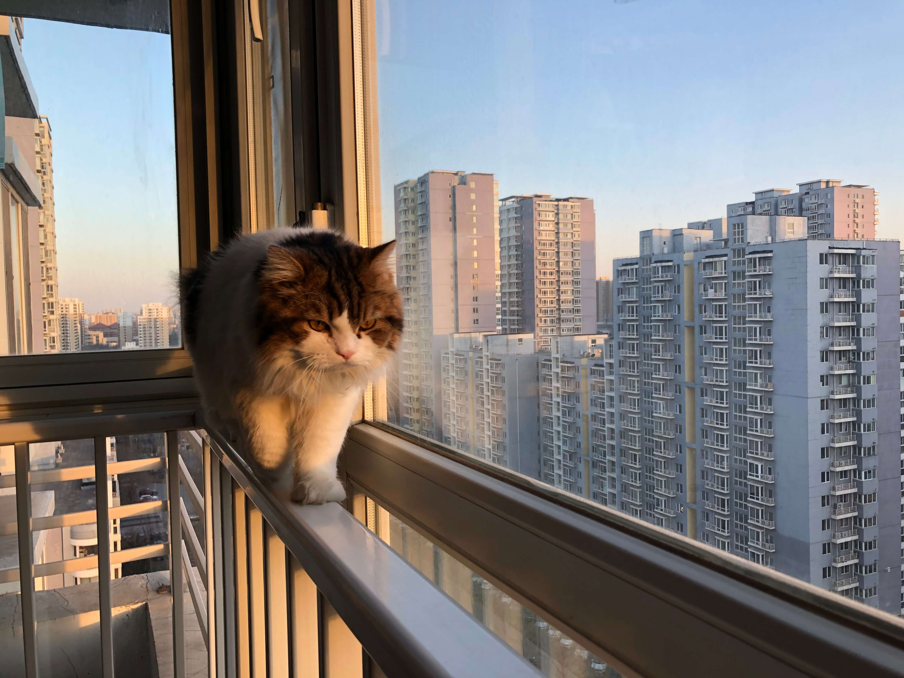

Visual Thinking Analysis: Interpretation of Own and Peer image
This image is has a special place in my heart because it was taken on March of 2021, a year after the Covid-19 pandemic started. After being locked up at home for more than a year, my friends and I decided to take a trip to nature, away from civilization so we could stay as safe as possible. This image captures a moment of peacefulness among friends. It reminds me of the sense of relaxation, and contentment that I felt while being in good company and in nature.
My collection of pictures is about my high school friends and the places that we've visited together. In my collection I want to showcase different landscapes, activities and moments that I've together with them.
I want my collection to be a reflection on human connection. More than anything, I want to look back at the past and have pictures as mementos of the experiences that I lived since I moved to the U.S. Additionally, The people that you see in the pictures where my first friends in America, one day while I was eating alone in the cafeteria, they went up to me and invited me to sit with them. Since that day, they kinda "adopted me" to their friend group. At the beginning it was really hard to communicate with each other because of I couldn't speak english but the more I hang out with them the more comfortable I became talking. So like I said I want the collection to serve as a reminder of the resilience and strength that I developed through my journey of adapting to a new country and building a new life.
The obvious things that I can see from this image is that there is a cat walking walking on a windowsill while you can see buildings in the background and the sun either rising or setting.
I like the setting of the picture, It seems to be taken a regular day. The main focus of the image is the cat, so i can infere that the cat plays a important role in the photographer's life. The implicit lines that are generated by the window also guide your eyes to the cat that is walking pacefully. With that being said, I wonder how this picture relates with the whole collection of pictures. By just looking at this picture only I think the collection will be about how the author spends their day to day with their beloved cat.